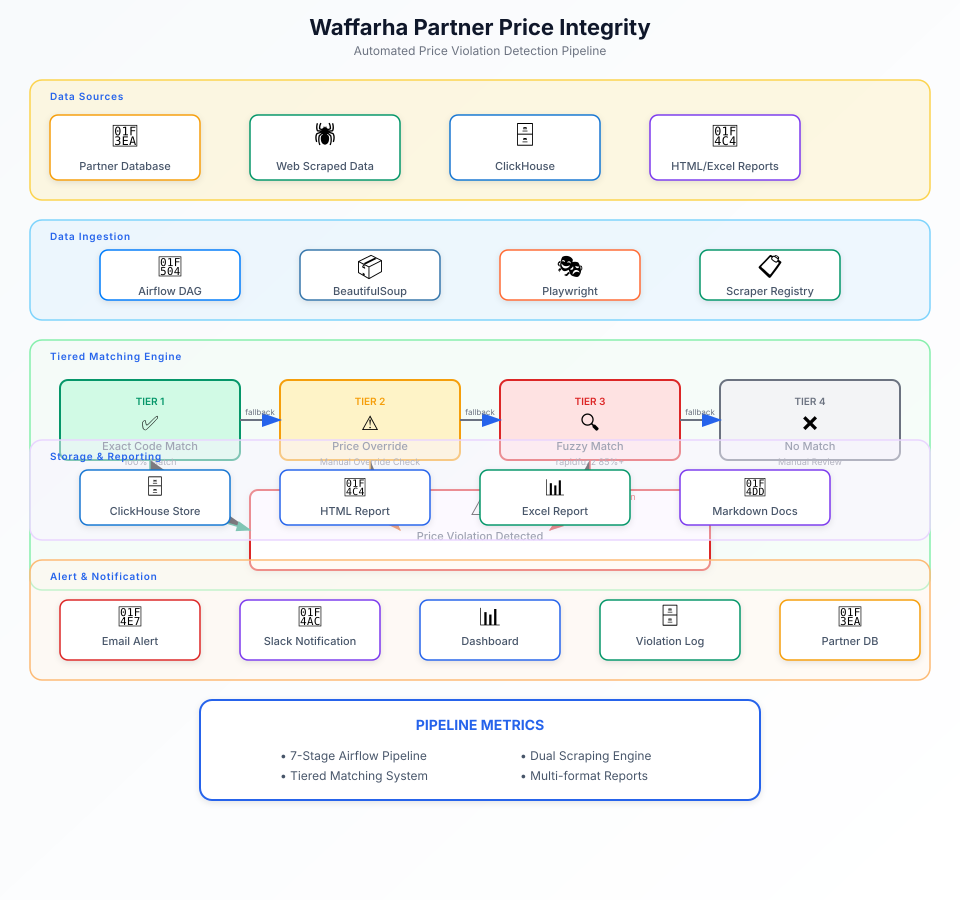

Pipeline Stages
| Stage | Description | Frequency | Output |
|---|---|---|---|
| 0 | Partner reachability audit - classifies all partners into 5 buckets | Weekly | triage_report.json/csv |
| 1 | Ingestion - fetch active offers with type_price tiers + coupon volumes | Daily | ingested_offers.json |
| 2 | URL normalization & catalog scoping | Daily | Integrated with Stage 4 |
| 3 | Tiered product matching (code → override → fuzzy) | Daily | Match confidence scores |
| 4 | Scraping engine (requests+BS4 / Playwright) | Daily | scraped_data/partner_*.json |
| 5 | Price comparison & violation classification | Daily | comparisons.json |
| 6 | Report generation (HTML, Excel, Markdown) | Daily | reports/*.{html,xlsx,md} |
Violation Detection Logic
is_violation = actual_value >= partner_site_price * (1 - tolerance_pct / 100) Classification tiers: • Violation: is_violation == True • Watch: Near-miss just outside tolerance band • Clear: Voucher meaningfully cheaper • Unverifiable: Partner has no online catalog
The Problem
Waffarha's commercial partners sometimes undercut their own voucher prices on their websites, undermining the value proposition for customers and damaging trust. Manually monitoring hundreds of partners across thousands of products is infeasible, requiring an automated solution that can detect violations at scale.
Architecture
Hover or tap any component to see details

Implementation
- Tiered Product Matching: Implemented a three-tier matching system: exact product code match → manual override → fuzzy text matching via rapidfuzz for cases without standardized codes
- Dual Scraping Engine: Built a scraping system with two backends: BeautifulSoup for static HTML pages and Playwright for JavaScript-rendered sites, with automatic fallback
- Resumable Checkpoints: Implemented per-partner JSON checkpoints to enable resumable scraping, preventing redundant work on failures
- Canonical Reporting: Generated reports in HTML, Excel, and Markdown formats with configurable tolerance bands (default 2%) and watch-list filtering
- Automated Scheduling: Orchestrated as two Airflow DAGs: weekly partner audit and daily ingest-compare-report cycle
Challenges
- Product Standardization: Partners use different naming conventions and product codes. Solved with fuzzy matching and confidence scoring.
- Dynamic Content: Many partner sites use JavaScript for pricing. Solved with Playwright integration for headless browser rendering.
- Scale: Hundreds of partners with thousands of products. Solved with parallel processing and checkpoint-based resume.
Outcome
The pipeline automatically detects partner price violations on a daily basis, enabling Waffarha to maintain price integrity across its partner network. The modular design allows easy addition of new partners and scraping strategies.